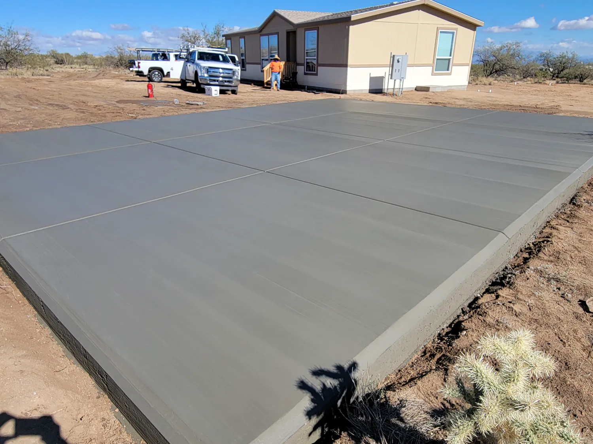
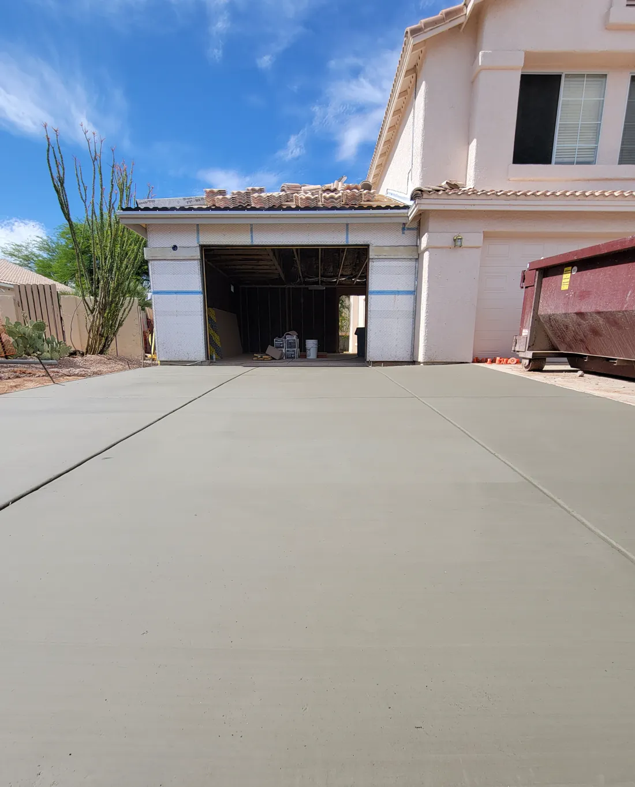
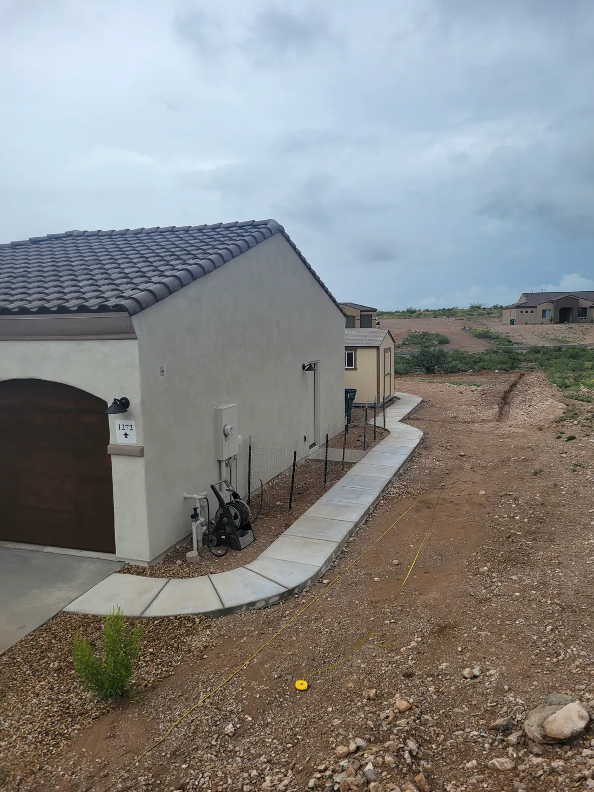
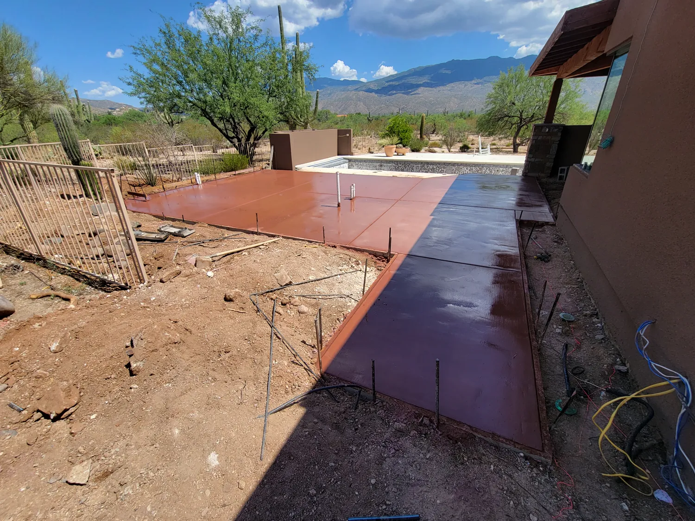
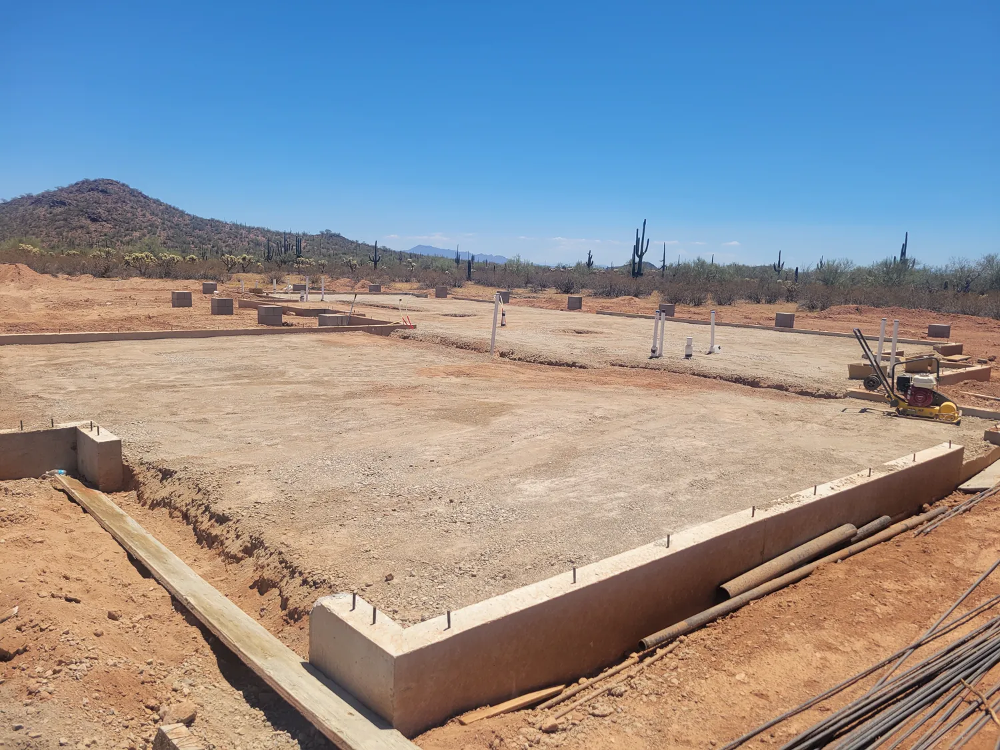
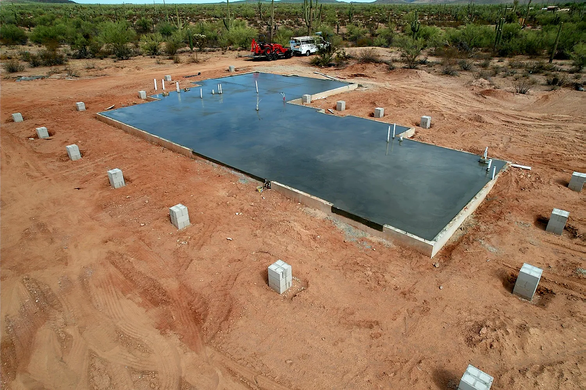

Concrete doesn't do second chances.
USM Construction LLC pours slabs, foundations, driveways and patios across Tucson and Pima County. Family-owned. Done right, the first time.
A truck of concrete gives you about ninety minutes.
Then it starts to set. No undo. No second pour.
Skip the prep, add a little water, rush the finish, and you'll see it in the cracks for years.
This is not a weekend project.


The rushed driveway
Water on the base, a hose in the form.
A wet, loose base settles. The slab on top of it follows.
Soupy mix, poured fast.
Extra water makes concrete easy to place and much weaker once it cures.
Then the cracks show up.
No steel, no planned joints, so the slab picks its own places to break.
And then comes the teardown bill.
Breaking out and re-pouring costs more than doing it right once.

Same driveway. Which crew do you want?


The right way
Same job. Done by pros.
- Compacted gravel base, graded to drain
- Rebar on chairs, so steel sits where it belongs
- Mix ordered for the job. No water added on site
- Placed, screeded and floated on schedule
- Joints cut and the slab cured, not left to chance
Poured right. On schedule.
- Licensed, insured and bonded
- Free written estimates
- 4.9 stars from 18 reviews
What we pour.
Residential and commercial concrete. Pick one to see how we do it.
New-Home Construction Concrete Foundation
Foundations for custom and production homes.
See how we do itColored Concrete
Integral and surface color for patios, walks and pool decks.
See how we do itDecorative Concrete
Stamped patterns and stained finishes.
See how we do itConcrete Driveway Installation
New driveways, and repair of existing ones.
See how we do itConcrete Patio Installation
Custom concrete patios built around your home.
See how we do itConcrete Walkway Installation
Straight or decorative concrete walkways.
See how we do itConcrete RV Pad Installation
Level, stable pads sized to your RV.
See how we do itConcrete Foundations
Stem wall, monopour and slab foundations.
See how we do itConcrete Garage Pad Installation
Garage pads: new installation and repair.
See how we do itConcrete Gazebo Pad Installation
Pads for gazebos, ramadas and outdoor structures.
See how we do itConcrete Pool Deck Installation
Safe, durable concrete pool decks.
See how we do itConcrete Post-Tension Slab
Post-tension slabs with internal reinforcement.
See how we do itCivil Concrete Projects
Curbs, sidewalks, ADA ramps and other site concrete.
See how we do itShed Pad Installation
Level concrete pads for sheds and outbuildings.
See how we do itShop Pad Installation
Slabs for shops, barns and metal buildings.
See how we do itConcrete Slab Installation
Slabs on grade for homes, pads and outbuildings.
See how we do itADU Foundations
Foundations for accessory dwelling units.
See how we do itNot sure which one you need?
Our work.
A few recent pours. Ask us for more near you.





How we keep it honest.
Concrete is hard to judge until it's too late to change. So we put the important parts in front of you early.
-
A written price before we start.
Scope, thickness, finish and schedule on paper. If anything changes, you hear it from us before the work, not on the final invoice.
-
No water added at the truck.
We order the mix for the job and pour it as delivered. Extra water makes it easier to place and weaker once it cures.
-
Licensed and insured.
We carry liability and workers' compensation and are bonded, so your property is covered and so are our employees.
-
Family-owned and operated.
We care how it turns out because we own the business.

Family-owned. Flatwork to foundations.
USM Construction LLC is a family-owned and operated concrete contractor in Tucson. The work runs from simple flatwork to foundations and structural concrete, for homeowners, builders and commercial clients.
We carry liability and workers' compensation insurance and are bonded. We care about your experience because we own the business.
- Coverage
- Licensed, insured and bonded
- Ownership
- Family-owned and operated
- Rating
- 4.9 on Google
Where we work.
Serving Tucson and Pima County and the towns around it.
- Tucson
- South Tucson
- Drexel Heights
- Drexel-Alvernon
- Littletown
- Summit
- Tucson Estates
- Tanque Verde
- Casas Adobes
- Catalina Foothills
- Oro Valley
- Tortolita
- Rillito
- Marana
- Avra Valley
- Saddlebrooke
- Oracle
- Green Valley
- Vail
- Three Points
Not on the list? Call. If the truck can get there, we'll tell you straight whether we can take the job.
Call (520) 665-9950What customers say.
Hover a bubble to read it.Tap a bubble to read it.
4.9 average from 18 reviews. Read them on Google
I cannot say enough good things about USM Construction. Their work is exceptional!
Usiel Montano and his crew saved my building project. These guys even made sure there was no organic material underneath the slab. Very meticulous, square, with a perfect finish.
They were courteous and professional in their work. I would not hesitate to recommend them to anyone needing concrete work.
Booking is simple.
-
Call or send the form
Tell us what you want poured and where.
-
We look at the site
We measure, check access and drainage, and talk through the finish.
-
You get it in writing
One clear quote. Price, scope, schedule.
-
We pour and finish
Prep, forms, pour, finish, cure. Then a walkthrough with you.
Questions we hear a lot.
How long until I can walk or drive on it?
Most slabs take foot traffic after about 24 to 48 hours. Cars and light trucks usually wait around seven days. Concrete keeps gaining strength for roughly 28 days, so we'll give you dates for your job.
Can you pour in Tucson's summer heat?
Yes, with the right plan. In 100 degree weather concrete sets fast, so the mix, the crew size and the pour hours all get adjusted and the surface is protected from drying too quickly.
How thick should a driveway be?
Four inches is common for cars. Heavier vehicles, RVs or weak soil call for more thickness, steel, or both. We size it to what will actually drive on it.
Do I need a permit?
It depends on the city or Pima County and the job. Foundations and structural work almost always do. We tell you what your job needs.
How do you price a job?
By area, thickness, prep, access and finish. Every estimate is free, and we explain what is driving the number.
Should concrete be sealed?
For most patios, walkways and colored or decorative work, yes. A sealer slows staining and surface wear. We'll tell you what suits your finish and when to reapply.
Ready when you are.
Call us, or send the details and we'll call you to set up a free estimate.